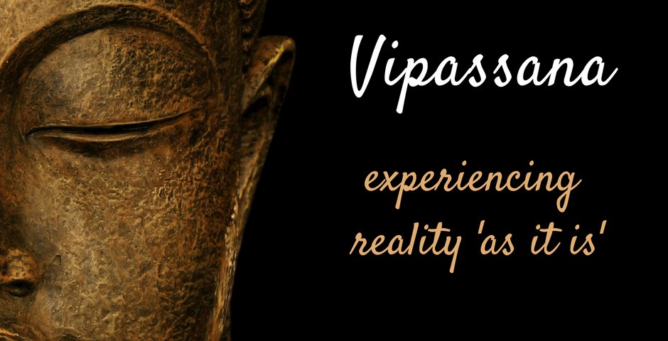
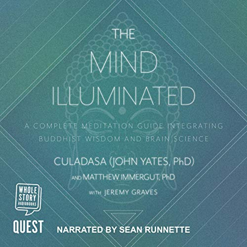
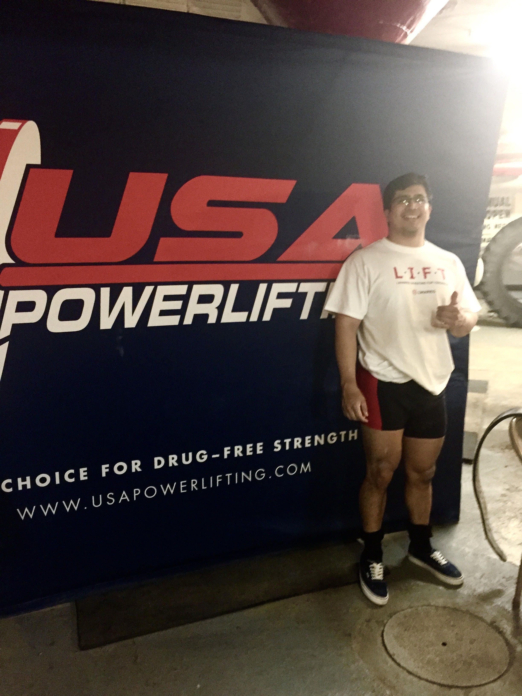
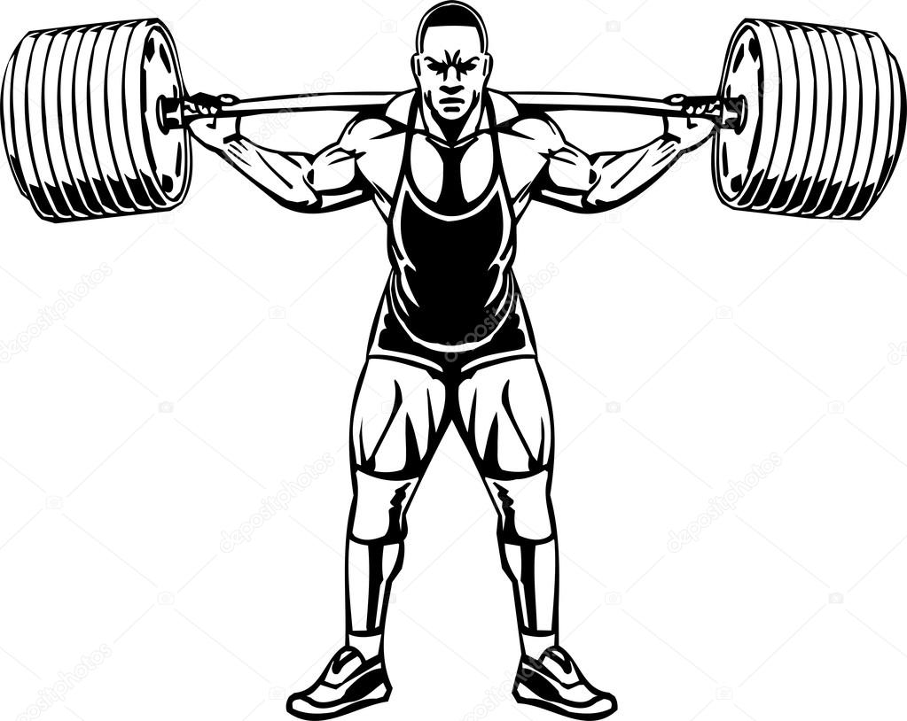
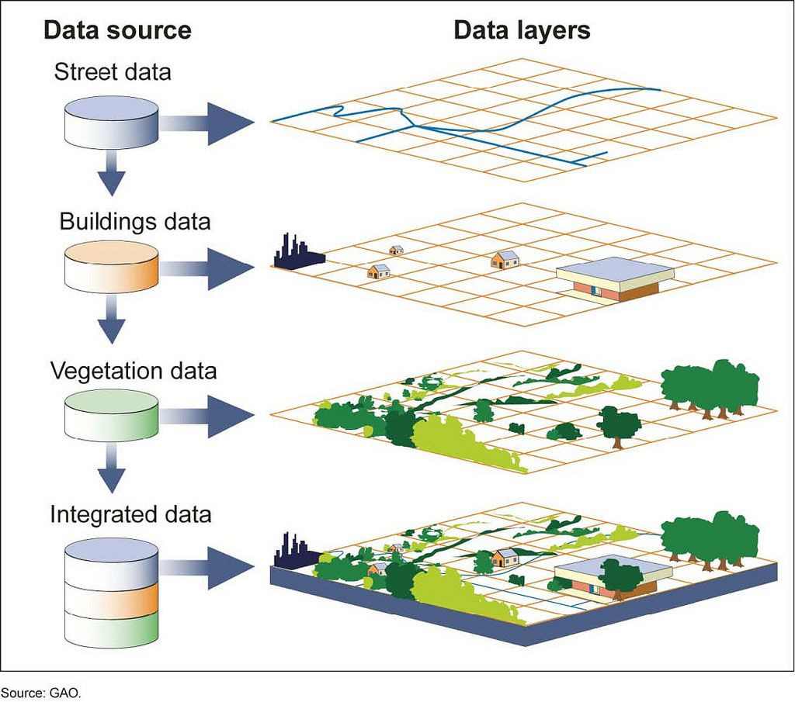
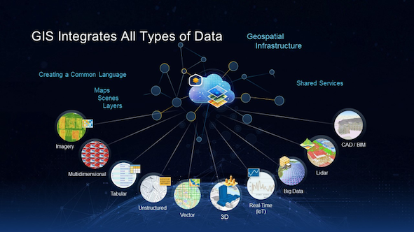
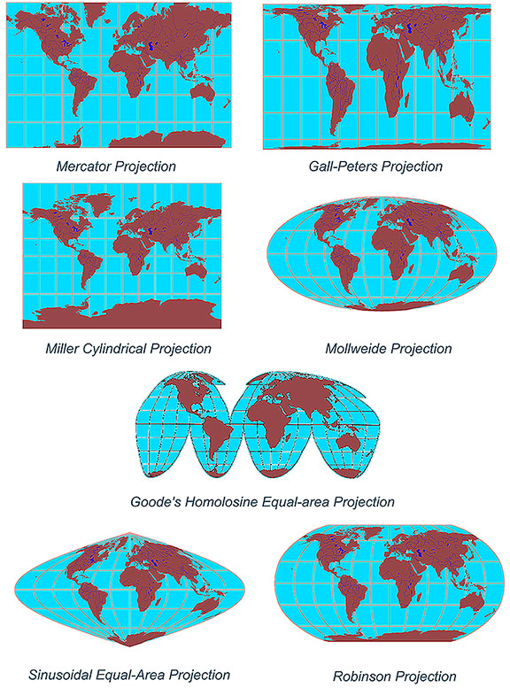

One of the main habits I picked up when moving to St. Louis is practicing Vipassana meditation. This is a practice where the breath serves as an anchor for stability of attention and concentration. The breath may be observed at the tip of the nose or even at the abdomen where an "in and out" sensation is felt. I have listened to many podcasts and read many books along the way such as The Mind Illuminated by Culadasa John Yates, Mans Search for Meaning, and the Ten Percent Happier Podcast.
 Eddys Pillars of Life
This will be a high level overview of Eddys interests
I started competing in Powerlifing not too long ago and this hobby is something that serves as a mental break from other life activities. Powerlifting is composed of 3 lifts which are the squat, bench, and deadlift. Their are 3 attempts for each lift with the goal being obtaining the highest total possible. Powerlifting tends to use the metric system and lifters in the U.S. typically have to convert their pound attempts to kilograms.
 I currently work as a Geospatial Analyst for a defense contracting firm and this is the initial start of my professional career since graduating from the University of Washington, Seattle in 2018. The type of work that I do involves feature extraction, attribute data, working with automated tools, validation tools, testing of proprietary software, and tons of documentation. The GIS work that I was used to came from a sustainability perspective and so currently specializing in the creation of defense mapping products gives me a unique insight as far as how GIS is used in other areas of business.
  In some respects, the learning journey has only just begun since graduating college. Whether that is picking up a new self help book to read, learning powerlifting methodologies on how to make progress, or learning software development, the learning journey is here to stay! The one common theme in my life is to keep being curious about how things work and ultimately solving problems well.